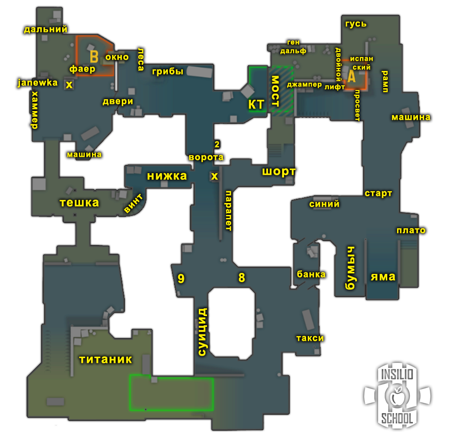
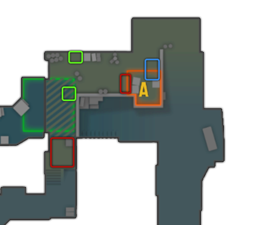
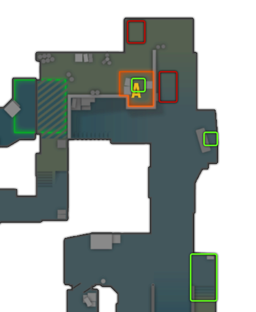
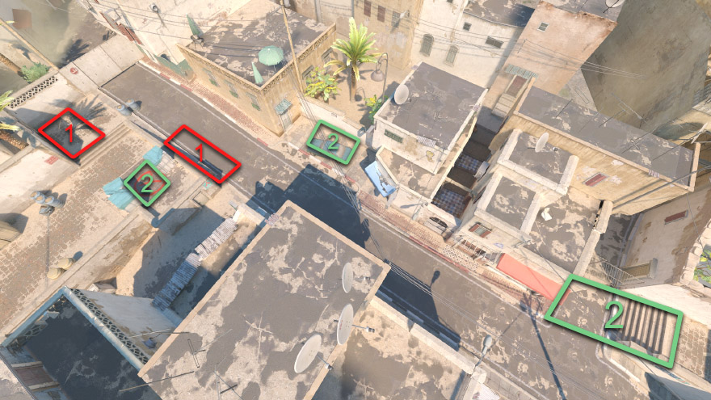
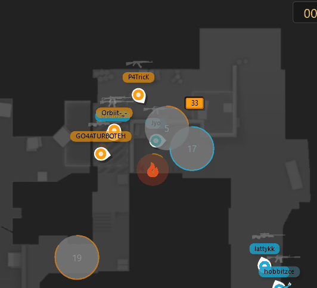

Dust 2
Правила, роли, дефолты, выходы, ретейки, комбинации
Общие правила (лекция 4)
Атака T
| # | Правило |
|---|---|
| 1 | Если у защиты нет AWP, играть контактнее, меньше смоков. |
| 2 | На позднем тайминге, после разменов, играть через центр карты (мид) в контакт, без шума. |
| 3 | Первым играет большинство (core). |
| 4 | Люркеры должны контачить точки, если кор плохо разменялся. |
| 5 | Ставить бомбу под тиммейта или под зону, из которой пришли. |
| 6 | Когда КТ начал дефать, считайте секунды. |
| 7 | При заходе на точку следите за кучностью, останавливайте тиммейта, если он ушёл далеко. |
| 8 | Считать смоки, которые тратит КТ. |
Защита CT
| # | Правило |
|---|---|
| 1 | Последний смок всегда на бомбу. |
| 2 | Ситуации 2 в 1 играть вместе. |
| 3 | Первым играет большинство (на ретейк). |
| 4 | В меньшинстве нужно что-то делать: вместе пушить или стакать, то есть рисковать. |
| 5 | В большинстве играть от зон, без особого риска, больше на чек/стрейфе. |
| 6 | Против +W: тратить все антираш-гранаты, пикать в ответ на средних таймингах. |
| 7 | Если под одной точкой агрессия, под другой играть на удержание и сейв. |
Правила Dust 2 за КТ CT
- с лонга над рампой, чтобы помочь принять зиг;
- с рампы/просвета на лонг, чтобы помочь длине;
- с КТ над рампой или в окна, чтобы помочь принять зиг;
- с КТ перед окном, чтобы помочь принять сплит Б;
- с грибов за спину куда-то на Б, чтобы помочь принять Б;
- с Б флешку на упор мида, чтобы помочь убить мид с КТ или грибов.
Правила Dust 2 за Т T
Позиции и роли (лекция 1)


Термины
- Дефолт: расположение игроков по карте во время обычного раунда. Часто играется, чтобы понять, как играет противник на карте или её участках.
- Кор (ядро): основная сила команды, 3+ игроков, играющих вместе.
- Зоны карты: места, контроль которых в данном раунде и моменте даёт преимущество.
- 3-1-1 (цифры): количество игроков под точкой А, на миду и на точке Б (очерёдность зависит от карты; на Dust2 это Б-Мид-А).
- Контакт: движение до первого столкновения с противником с минимумом шума, без гранат.
- Люрк: игрок, всегда отвечающий за свою зону. Если команда выходит через его зону, он выходит чаще всего первым. Если команда играет через другую зону, он закрывает спину тиммейтам или играет в спину противникам через свою зону.
- Микро: умение контролировать персонажа: движение, аим, правильное использование гранат.
- Макро: понимание ситуации и верные решения: пассивно или агрессивно, быстро или медленно и т.п.
Роли
| Роль | Описание |
|---|---|
| А лонг | Позиция для ребят с хорошей стрельбой. Нужно занимать длину, иногда с командой, иногда соло. При отдаче лонга играть с плента соло или ретейкать шорт с тиммейтами. |
| Б опорник | Базовая Б-опора, закрытый плент. Важно играть антираш и запирать смоком Б тешку, если ожидаешь выход. Много off-angle и позиций для приёма тешки, но вариативность уменьшается при сплите. |
| Б хелпующий | Одна из самых креативных ролей: необязательно играть в стороне Б. Варианты: от драки в лонге по респу до пуша тешки вместе с Б-опорником. Хорошая позиция для игры со второй снайперской винтовкой. |
| А хелпующий | Создаёт возможности для других, но участвует во всех дуэлях. Важно создавать пару с кем-то на карте, кроме Б-опорника. |
| AWP | На дасте ценятся вариативные снайперы, которые ищут опен-фраги и понимают, где находиться при выходе. Исторически снайперская карта, а с появлением ревилов смока стала ещё комфортнее для AWP. |
В оригинале есть видеоразборы игры на ролях (в том числе «не дефолтная игра») и AWP-разборы пассивной игры на Б, миду, лонге и шорте (игроки w0nderful и ZywOo). видео в оригинале
Дефолты (лекция 1)
Большинство хороших команд играют первые бай-раунды от дефолта, особенно если не знают, как играет соперник: это проверенный способ не нарваться на заготовки. Качественные коллективы за счёт дефолта переигрывают многих соперников, не показывая пул заготовок.
Три элемента дефолта
| Этап | Задача |
|---|---|
| 1. Старт | Собираем информацию и отжимаем зоны карты, получаем контроль над ними. |
| 2. Середина | Принимаем решение (мид-кол), куда идём дальше. Зону к этому моменту уже отжали либо ведём за неё войну. |
| 3. Конец | Постановка бомбы и пост-плент ситуации. |
Типы дефолтов
- Обычный: играем спокойно, от информации, не торопимся, отжимаем всё под гранаты, работаем вместе. Если нужно, реагируем по информации, отменяем план и выходим туда, где соперник предлагает минимальное сопротивление. Пример: КТ показали агрессию на миду, для этого нужно минимум 2–3 КТшника, значит быстро реагируем в точку, если есть возможность.
- Агрессивный: есть задача отжать зону, и даже если получили информацию, что КТ дерётся за мид, принимаем файт и деремся за нужную зону. Главное навестись на голову быстрее оппонента. При этом грамотно используем гранаты и двигаемся, а не бежим +W: у нас есть мысль на раунд.
Дефолт Т T
2-3
Два игрока через тешку и трое в районе бокса. Идея: занять мид с двух сторон. Два игрока в тёмке могут играть вместе или раздельно, также с игроком топ-мидла и снайпером. Важно отыграть поджим и занять мид. Играется неторопливо, потенциал размена невысок.
1-4
Для быстрого занятия зон мида и шорта, большой трейд-потенциал при поджимах или упорных сетапах оппонентов. Важно быстро скидывать смок в ворота, а двойке-тройке рифлеров играть плечом к плечу, чтобы быстро помочь друг другу. Игрок тешки играет от информации тиммейтов: осторожно, если нижку могут поджать, смелее, если в нижке нет игрока.
Для обоих дефолтов Т:
- Большинство: сплит Х+1 в крайнюю точку через зиг в А или через мид в Б, с люркером в лонге или тешке соответственно.
- Меньшинство: собраться кулаком, контактом или под минимум гранат двигаться к любому планту на размен с попыткой последующего доигрыша.
Дефолт КТ CT
2-3 (варианты «от лонга» и «от шорта»)
Тройка на А имеет полную свободу и может сыграть любой сетап. Двойка на Б имеет меньше опций и должна подыгрывать игрокам с А.
- Цель: наказать атаку за неаккуратную игру в нужном районе и найти преимущество. Опционально занять длину одному игроку, если атака не создаёт угрозы на длине.
- План Б: потеря шорта: ретейк лонг; потеря лонга: ретейк шорт; смерть Б-ротейтора: (1) стакать А или (2) играть 2Б, 1 КТ, 1 лонг от сплита Б и А в отдачу.
1-3-1
Вариативный дефолт в мидле, с агрессивными и пассивными сетапами.
- Цель: при агрессивных сетапах создать преимущество быстрым занятием зоны или поиском первого фрага; при пассивных удерживать шорт/упор мида и наказывать атаку за ошибки при занятии зон.
- План Б: потеря шорта: ретейк лонг; потеря лонга: ретейк шорт; смерть кого-то в мидле: игрок с крайней позиции его заменяет (в шорт игрок лонга, в грибы игрок Б); смерть снайпера: стакать одну из точек.
Линейка
Расстановка после занятия длины; показала эффективность за много лет в соревновательной контре.
- Цель: отыграть ретейк длины и выход через шорт после занятия длины защитой.
- План Б: потеря лонга: ретейк шорт и игра в приёмку от плента.
Выходы на точки (лекция 2)
Точка А
Выход с шорта под раскид
- Смоки можно кидать одновременно.
- Держать кучность, выходить плечом к плечу.
- Все гранаты нужно выучить и попадать в них.
- Начинать раскидку только когда все готовы.
- Это полноценный раскид, как А-раскид на Мираже.
Резкий выход с шорта
- Как только отпускаются гранаты, начинается выход; ждать раскрытия смока не нужно.
- Важно попадать гранаты. При выходе на зиг, если гранаты мажутся, шанс погибнуть на мосту очень высок.
Резкий выход с лонга
- Имитировать дефолт: вид, что гранаты в лонг (смок на угол + одна флешка) скинуты просто для напряжения, а выходить вы не собираетесь.
- Двое заходят в бокс, двое встают на флешки. Игроки в боксе готовы тушить возможный или уже лежащий молик, но тушить сразу не нужно, а ближе к его окончанию (выход с таймингом).
- Двое под взрыв первой флешки выбегают из бокса и берут дуэли. КТ чаще всего не готовы, массовой драки не будет, если быстро найдёте опен-фраг.
- Опционально кинуть молик за смок «старт», чтобы КТ не нашли размен.
Быстрый выход с лонга
- Смок «старт» кинуть как можно быстрее (желательно выучить инста-смок).
- Первый игрок ни на что не отвлекается, готовится бежать и убивать.
- Второй игрок скидывает флешки на углу, откуда тиммейт будет накидывать флешки.
- Два человека кидают флешки: первые три направо, дальше по ситуации. Если в яму пробежал КТшник, можно кинуть левую, иначе продолжать спамить правую.
- Траектории: первый бежит в яму, второй ближе к смоку «старт»; если вас трое, третий за синий.
А сплит
- Играется при занятом шорте и инфе, что в боксе нет соперника.
- Одна сторона начинает, вторая с небольшой паузой тоже разгоняется. В примере сначала играет длина, потом шорт; можно наоборот: шорт выкатывает гранаты и играет, лонг подыгрывает.
Точка Б
Б выход (5 игроков)
- Первый даёт флеш об стенку и выбегает.
- Второй за ним.
- Третий кидает флешку на janewka.
- Четвёртый кидает нужные гранаты и доходит разменивать.
- Пятый (опционально снайпер) кидает гранаты и забирает тешку.
Траектории: первые двое бегут вперёд за икс («протягивают»), третий идёт направо вдоль машины, четвёртый свободен и играет по ситуации.
Б контакт под AWP
- У AWP должен быть один из трёх ближних респов на Б.
- Минимум 2 человека контачат под AWP, минимум 1 имитирует дефолт.
- AWP +В забегает и берёт зону икса/упора тешки.
- Если прилетает смок, а вы уже в проходе тешки: (1) выбежать, как Heroic на видео, или (2) отменить и уйти переигрывать вчетвером через нижку.
Б сплит
- В дефолте предварительно оказать хотя бы минимальное давление на шорт и не отдать тешку.
- Контактом или под флеш выбить упор мида.
- Летит смок Б-сплит и идёт выход; чаще всего масс-мид (больше пространства).
- Игрок тешки играет на размен после тиммейтов с мида.
- Первые двое идут вдоль правой стенки, третий по левой. AWP забирает окно и в момент захода на точку накидывает флеш.
- Зайти нужно минимум на 2 ворота.
Антифлеш на Б: тема отдельного фрагмента записи лекции 2.
Пост-плент и ретейк (лекция 2)
Пост-плент
Позиции ставятся по приоритету: красная, зелёная, синяя.
Точка А (выход через шорт)


Точка А (выход через лонг)


Точка Б
Ретейк CT
Ретейк Б
- Давать смок в тешку, даже если оттуда идёт ваш игрок.
- Молик в первую очередь на машину (эта позиция из Т1 перешла в Т2, туда всегда летит молик).
- В тешке нужен человек в 90% случаев.
- Под флеш двое выходят из ворот и расходятся влево-вправо.

Ретейк А с лонгом
- Обязательно выкатить смок в просвет, даже если он последний: без шорта с КТ без смока шанс выйти очень мал.
- Флешки в окно в КТ на любом ретейке.
- Молики: за двойные, шорт (в порядке приоритета).

Ретейк А через шорт
- Смок в просвет необязателен.
- Молик в плент очень нужен. Обычно играется масс-шорт, игрок с КТ вторым темпом.

Комбинации (лекция 3)
За атаку T
Под А
- Буст над смоком КТ: после отдачи смока не шуметь, чтобы КТ не были в фокусе и не понимали до конца, на длине вы или нет (эффект неожиданности).
- Буст над смоком шорт: после смоков тоже не шуметь. Бусты делают в меньшинстве/при равенстве; в большинстве лучше доигрывать плечом к плечу.
- Выпуск лонг: подходит как для сплита, так и для фейка.
- Прочек кара через буст: в основном на пистолетках или эко/форсах. Делать как на видео, чтобы не получить в голову.
Под мид
- Буст мид: даётся снайперу с AWP или Scout. Делать, если ожидаешь врага в районе грибов.
- Пик мида под флеш: проверка упора мида. Не топать прямо перед воротами, желательно иметь инфу.
Под Б
- Люрк-смок + прошив: фейкануть напряжение Б и запустить игрока, чтобы сработал эффект неожиданности.
За защиту CT
Под А
- Буст-ретейк: не только для ретейка, но и чтобы остановить установку бомбы. Делать по дальней стенке от плента. Атака должна заходить через лонг, шорт для защиты чистый.
- Флешка в зиг: одна из лучших моменталок на дасте. Договориться, в какой момент отпускать. Игрок в зиге может чекать плечом, играть в ожидании флешки или просить на репик после килла.
- Пуш банки под флеш: рискованно, не чаще 1 раза за игру. Зачистить банку заранее и пикать под флеш именно зону Т-спавна и такси.
- Буст от зиги: буст для AWP, чтобы найти фраг. Лучше всего, когда оппоненты много играют контактом: по игроку, пикающему широко, непросто попасть.
Под мид
- Буст над смоком: с любым снайперским оружием, не больше 1 раза за игру. Буститься по дальней и пикать из-за стенки: запрыгнуть на тиммейта, встать за стенкой, затем пикнуть.
- Пик мида: когда атака любит быстро играть через топ-мид и не любит быстро нижку. Пикать по дальней, закрываясь от нижки.
- Пробив нижней тёмки: флешка blameF; флешка не только от нижки, но и от мида. Игрок атаки должен быть как можно ближе к выходу из нижней.
- Разбивка смока в миду: рискованно; делать, когда AWP является засейвленным оружием.
Под Б
- 2 офика: оба игрока Б-плента смотрят ОДНУ линию. Ближний к тешке сидит и не встаёт, когда начинает стрелять. У обоих должен быть один угол обзора, советуют использовать метки.
- Ретейк-флеш: флешка на ретейк для врывающихся в ворота.
- Пик тешки под флеш: если есть инфа, что игрок атаки в тешке (со стороны КТ), и хочется проверить тешку: вдвоём контактом за ручку либо под эту флешку. Потренировать на пустом сервере.
Темы вопросов и ответов из записей
Записи лекций (ответы в видео, текста ответов нет) видео в оригинале:
- Лекция 1: вопросы по дефолтам в атаке и защите.
- Лекция 2: ретейк Б: молик на «х» или за машину; аспекты тренировки игры в двойке; при сплите А через лонг обязательно ли большинству играть первым; должны ли первыми выходить те, кто в меньшинстве; как с лонга дойти до А (показ).
- Лекция 3: какую флешку из тешки кинуть для ретейка Б; буст на зиге для чека тешки; ванвеи в CS2; ретейк А при ситуации 3-3; ранбуст на лонге за атаку в яму; стоит ли абузить комбы каждый раунд или раз в игру.
- Лекция 4: какую точку стакать в меньшинстве; лучшая расстановка для принятия шорта; относится ли правило Т №1 к пистолеткам; пистолетки для Dust2; как коллить игрокам, которые не слушают; давят ли при сплите Б 2 КТшника тешку; один опорник на Б: драться или прятаться; меняться ли ролями за КТ; как играть А при агрессии на миду; как принимать с лонга, если выбили и ушли в шорт; тренировка стрельбы (боты или DM).